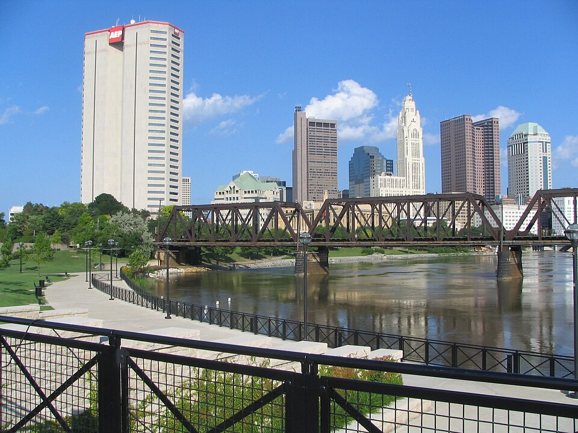
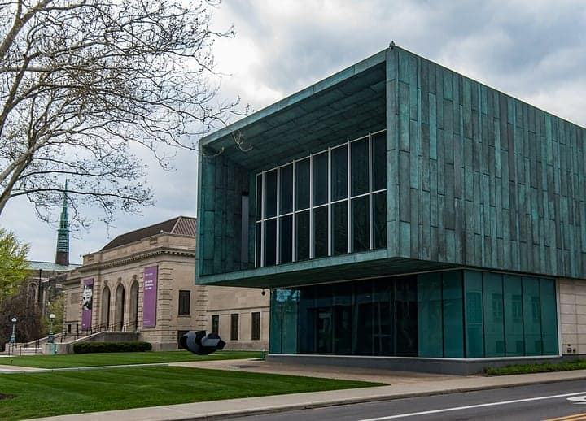

United States
Columbus
Ohio’s capital — the Short North, German Village & a great immigrant table
86 places · 8 areas · every one sourced, pinned and status-checked · last checked · 2 closed, kept for the record. Ordered by tier, then by number of named sources. How we choose
Columbus-style · pizza · Ohio Theatre

Start with

Downtown & Scioto Mile 23 places · area 1 of 8
-
1 Must see within Downtown & Scioto Mile
Ohio Theatre
The 'Official Theatre of the State of Ohio' — a lavishly gilded 1928 Spanish-Baroque movie palace on Capitol Square, saved from the wrecking ball in 1969 and declared a National Historic Landmark in 1977. CAPA runs it today, with free summer walking tours and 'Mighty Morton' organ demos.
Your guide’s note Free guided tours on select summer Saturdays; otherwise a ticketed performance venue.
39 E State St, Columbus, OH 43215
Recommended by , ,
Photo: Ɱ · CC BY-SA 4.0 · Wikimedia Commons (resized) 2 Must see within Downtown & Scioto Mile
Ohio Statehouse
Ohio's 1861 Greek Revival capitol on Capitol Square — free tours, the Statehouse Museum, and grounds dotted with monuments in the heart of downtown.
1 Capitol Sq, Columbus, OH 43215
Recommended by ,
-
3 Must see within Downtown & Scioto Mile
COSI
The Center of Science and Industry — a top-ranked U.S. science museum in an Arata Isozaki building on the Scioto riverfront, with giant hands-on exhibits and a dinosaur gallery.
333 W Broad St, Columbus, OH 43215
Recommended by ,

Photo: Ɱ · CC BY-SA 4.0 · Wikimedia Commons (resized) 4 Must see within Downtown & Scioto Mile
Columbus Museum of Art
Strong holdings of American and European modernism (including Columbus native George Bellows) in a 1931 Renaissance-revival building with a light-filled modern wing.
480 E Broad St, Columbus, OH 43215
Recommended by ,
Photo: J. Jessee · CC BY-SA 2.0 · Wikimedia Commons (resized) 5 Must see within Downtown & Scioto Mile
Scioto Mile and Bicentennial Park
Downtown's riverfront promenade — a 15,000-sq-ft interactive fountain, gardens and skyline views stretching along the Scioto from the Arena District to the Whittier Peninsula.
233 Civic Center Dr, Columbus, OH 43215
Recommended by ,
-
6 Must see within Downtown & Scioto Mile
North Market
Columbus's last true public market (est. 1876) — 30-plus merchants including the original Jeni's, Momo Ghar and Hoyo's, just off the Short North and Arena District.
59 Spruce St, Columbus, OH 43215
Recommended by ,
-
7 Must see within Downtown & Scioto Mile · Ice cream
Jeni's Splendid Ice Creams — North Market
Jeni Britton Bauer launched Jeni's at the North Market in 2002; the grassy-buttermilk base and inventive flavors (Brambleberry Crisp, Brown Butter Almond Brittle) that turned a Columbus stall into a national brand.
59 Spruce St, Columbus, OH 43215
Recommended by ,
-
8 Must see within Downtown & Scioto Mile · Somali
Momo Ghar — North Market
Phenomenal Himalayan dumplings that put Columbus's huge Nepali-Bhutanese community on the map; the jhol momo swim in a spiced sesame broth. Featured on Diners, Drive-Ins and Dives.
59 Spruce St, Columbus, OH 43215
Recommended by ,
-
9 Must see within Downtown & Scioto Mile · Somali
Hoyo's Kitchen — North Market
The friendly gateway to Columbus's Somali food scene (one of the largest Somali communities in the US): tender suqaar, crisp sambusas and rice served the traditional way with a banana. 'Hoyo' means mother.
59 Spruce St, Columbus, OH 43215
Recommended by ,
-
10 Must see within Downtown & Scioto Mile · American
Veritas
Chef Josh Dalton's glass-kitchen tasting menu, reinvented every few months — repeatedly ranked Columbus's #1 restaurant since 2012.
11 W Gay St, Columbus, OH 43215
Recommended by ,
-
11 Must see within Downtown & Scioto Mile · American
Wolf's Ridge Brewing
The rare brewery that's also one of the city's best restaurants — award-winning beers (the coffee-and-vanilla Daybreak cream ale) alongside a serious downtown dining room.
215 N 4th St, Columbus, OH 43215
Recommended by ,
-
12 Must see within Downtown & Scioto Mile · Asian
Lan Viet Market
North Market's Northern Vietnamese stall from Khanh Le and his mother Lan Pham (a North Market staple since 2010; earlier known as Lac Viet) — a from-scratch pho broth simmered 24 hours and crisp, balanced banh mi.
59 Spruce St, Columbus, OH 43215
Recommended by ,
-
13 Worth the detour within Downtown & Scioto Mile
Topiary Park
The only park based on a painting: sculpted yews recreate Seurat's 'A Sunday on La Grande Jatte' — 54 people, boats and dogs — on the Old Deaf School Park grounds. Free.
480 E Town St, Columbus, OH 43215
Recommended by , ,
-
14 Worth the detour within Downtown & Scioto Mile
National Veterans Memorial and Museum
The only congressionally designated national museum for veterans of every branch and era, in a sculptural 2018 concrete-arch building (Allied Works) on the Scioto's west bank, ringed by a memorial grove and rooftop sanctuary.
300 W Broad St, Columbus, OH 43215
Recommended by , ,
-
15 Worth the detour within Downtown & Scioto Mile
LeVeque Tower
The 1927 Art Deco skyscraper that has defined the skyline for a century — 555 feet, now a hotel, lit in changing colors nightly.
50 W Broad St, Columbus, OH 43215
Recommended by ,
-
16 Worth the detour within Downtown & Scioto Mile
Grange Insurance Audubon Center and Scioto Audubon Metro Park
A LEED-Platinum birding center on the restored Whittier Peninsula wetlands, plus a 35-ft outdoor climbing wall and downtown skyline views. Free.
505 W Whittier St, Columbus, OH 43215
Recommended by ,
-
17 Worth the detour within Downtown & Scioto Mile
Thurber House
The restored home of humorist and New Yorker cartoonist James Thurber, now a literary center, museum and bookstore on a Jefferson Avenue historic row.
77 Jefferson Ave, Columbus, OH 43215
Recommended by ,
-
18 Worth the detour within Downtown & Scioto Mile
Southern Theatre
The oldest surviving theatre in central Ohio — opened 1896 as the 'Great Southern Fireproof Hotel and Opera House' after a run of downtown theatre fires, it hosted Sarah Bernhardt, Anna Pavlova and John Philip Sousa. CAPA restored it in a 14-month, $10M rebuild reopening in 1998.
21 E Main St, Columbus, OH 43215
Recommended by ,
-
19 Worth the detour within Downtown & Scioto Mile
Columbus Commons
A six-acre downtown green built on the footprint of the old City Center mall — a restored 1914 carousel, free summer concerts, a Thursday farmers market and 200+ free events a year. Free.
Look for Free; carousel rides seasonal (Apr–Sep).
160 S High St, Columbus, OH 43215
Recommended by ,
-
20 Deep cut within Downtown & Scioto Mile
Central Ohio Fire Museum
A restored 1908 downtown engine house of hand-drawn, horse-drawn and early motorized fire apparatus, with a kids' play space and fire-safety tours.
260 N 4th St, Columbus, OH 43215
Recommended by ,
-
21 Deep cut within Downtown & Scioto Mile
Union Station Arch at McFerson Commons
The last surviving arch of Columbus's demolished 1897 Union Station (a Daniel Burnham design), rescued during the 1976 wrecking and re-erected as the centerpiece of the 2.2-acre McFerson Commons in the Arena District. Free.
McFerson Commons, Nationwide Blvd, Arena District, Columbus, OH 43215
Recommended by ,
-
22 Deep cut within Downtown & Scioto Mile
Columbus Metropolitan Library — Main Library
The flagship of a system twice named National Library of the Year — its $30M 2016 daylight-flooded renovation (GUND Partnership), opening onto Topiary Park, won the Columbus Landmarks James B. Recchie Design Award. Free to wander.
96 S Grant Ave, Columbus, OH 43215
Recommended by ,
-
Closed — kept for the record, checked 2026-10-16 23
Hot Chicken Takeover — CLOSED
A Columbus original that launched at the North Market in 2014 and built a devoted following (and a social mission) around its Nashville hot chicken. All central-Ohio locations closed in September 2025 — kept here for the record.
59 Spruce St, Columbus, OH 43215
Recommended by ,

Short North, Victorian & Italian Village 7 places · area 2 of 8
-
1 Must see within Short North, Victorian & Italian Village
Short North Arts District
The gallery, restaurant and shopping spine on High Street between downtown and OSU, marked by its signature lit metal arches; monthly Gallery Hop has run since 1984.
N High St (Goodale St to W 5th Ave), Columbus, OH 43215
Recommended by ,

German Village & Brewery District 7 places · area 3 of 8

University District, Clintonville & OSU 14 places · area 4 of 8

Bexley, Olde Towne East & Whitehall 8 places · area 5 of 8

Franklinton, Grandview & Hilltop 6 places · area 6 of 8

Suburbs 18 places · area 7 of 8
Dublin, Worthington, Westerville, New Albany

Madison County 3 places · area 8 of 8
London, West Jefferson
How we choose
Every place is recommended by named sources (review-aggregator star ratings never count as the recommender), pinned to its door from a published coordinate, and status-checked. Closed places stay, flagged, so you know they’re gone.
- Must see
- The places to plan a visit around — graded within each area, not across the city.
- Worth the detour
- Strong picks, worth going out of your way for.
- Deep cut
- For the curious: smaller, odder, more local.
Within each area, places are ordered by tier, then by number of named sources — never by popularity. We don’t add ratings, prices or opening hours of our own. Any quoted in a write-up are the source’s, dated.
Follow changes — an RSS feed of every closure and status check in this guide, for any feed reader.
62 sights and 24 places to eat across Columbus and its neighborhoods, each traceable to the source that named it. The city’s food is a sleeper great — Jeni’s ice cream (born here), the North Market, Columbus-style square-cut pizza, Schmidt’s German cream puffs and one of America’s deepest Somali tables.
Take Columbus with you
Every place, its sources, the Guidebook and the photos at a small size. Map tiles are not saved: offline, the map shows our own pin schematic and every place stays listed.